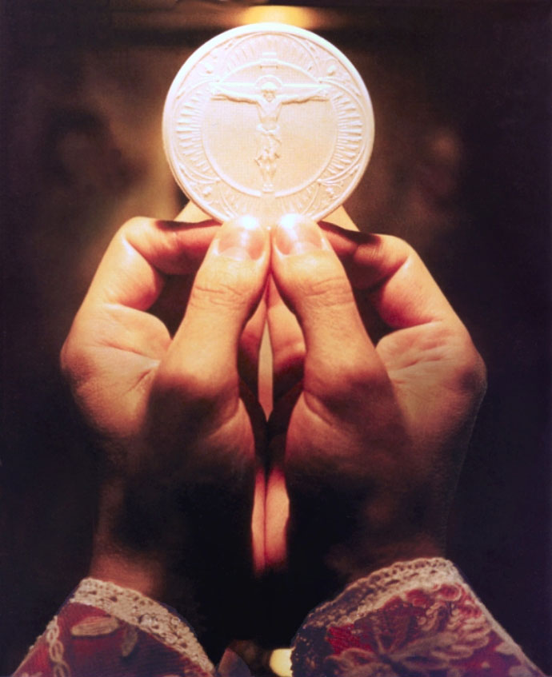

From Christ's words at the Last supper...

"And as they were eating, Jesus took bread, and blessed it, and brake
it, and gave it to the disciples, and said, Take, eat; this is my body.
And he took the cup, and gave thanks, and gave it to them, saying, Drink
ye all of it; For this is my blood of the new testament, which is shed
for many for the remission of sins"
-Matthew 26:26-28
“Take, eat; this is my body… this is my blood of the new covenant shed for many for the remission of sins.”
"And he took bread, and gave thanks, and brake it, and gave unto them,
saying, This is my body which is given for you: this do in remembrance
of me. Likewise also the cup after supper, saying, This cup is the new
testament in my blood, which is shed for you."
-Luke 22:19-20
“This is my body given for you… This cup is the new covenant in my blood which is poured out for you.”
Christ's words amongst many Jews...
"The Jews therefore strove among themselves, saying, How can this man
give us his flesh to eat? Then Jesus said unto them, Verily, verily, I
say unto you, Except ye eat the flesh of the Son of man, and drink his
blood, ye have no life in you. Whoso eateth my flesh, and drinketh my
blood, hath eternal life; and I will raise him up at the last day. For
my flesh is meat indeed, and my blood is drink indeed"
-John 6:52-55
“Except you eat the flesh of the Son of Man and drink his blood, you have no life in you. My flesh is true food and my blood true drink.”
From Paul...
"Wherefore whosoever shall eat this bread, and drink this cup of the
Lord, unworthily, shall be guilty of the body and blood of the Lord. But
let a man examine himself, and so let him eat of that bread, and drink
of that cup. For he that eateth and drinketh unworthily, eateth and
drinketh damnation to himself, not discerning the Lord's body. For this
cause many are weak and sickly among you, and many sleep."
-Corinthians 11:27-30
“Whoever eats or drinks the cup unworthily will be guilty of the body and blood of the Lord.”